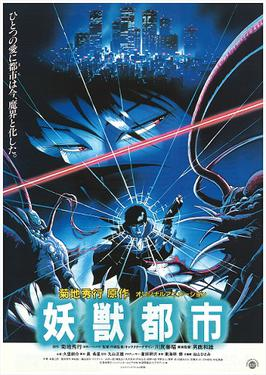

| Wicked City - The Movie | |
|---|---|
| Trailer | Original Poster |
|  | |
|
- Plot : The story takes place towards the end of the 20th century and
explores the idea that the human world secretly coexists with the demon world with a secret police force known as the Black Guard protecting the boundary. - Japenese title : 妖獣都市 ("Supernatural Beast City") - Genre : Urban horror / Fantasy - Directed by : Yoshiaki Kawajiri - Music by : Osamu Shoji (full OST > HERE) - Running time : 1h22m - Production : Madhouse animation studio - Release date : 19 April 1987 |
|